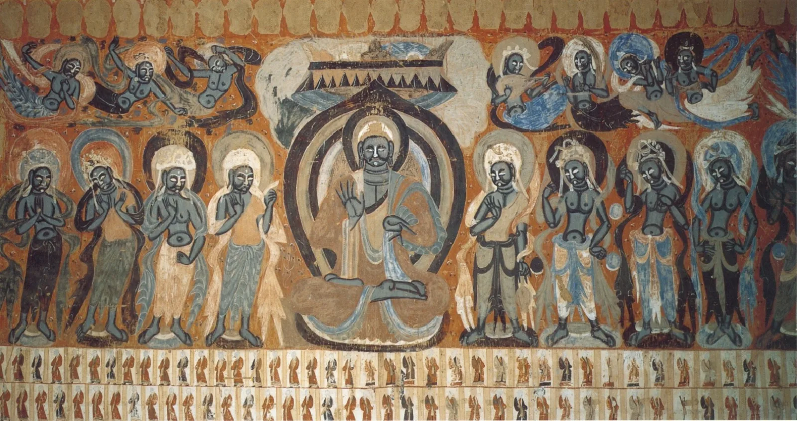
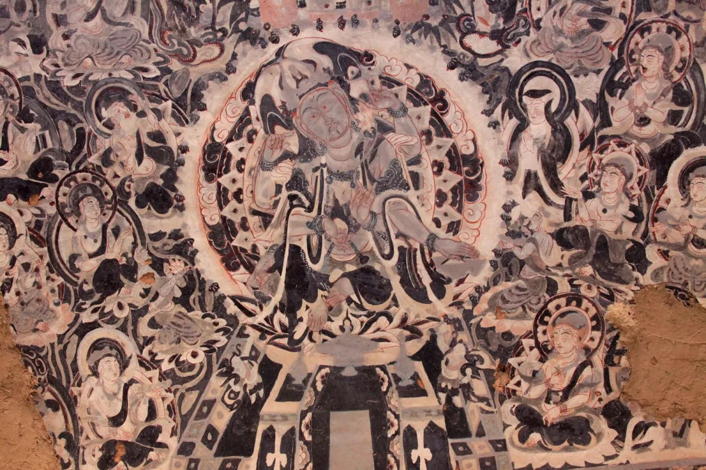
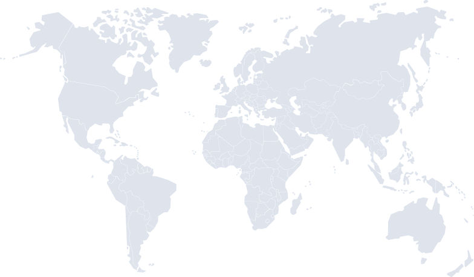

抖音舞蹈 · 直播
第一章 · 开篇
被刷到的飞天，从哪里来？
两万余条评论里，很多人对着屏幕上的飞天说“泪目”。但洞窟无法承受无限的现场观看，飞天要先被保护、被数字化，才能被这么多人看见。飞天的数字传播，并不是从图案开始，而是从保护开始。故事，要从洞窟本身讲起。

石窟凝望。飞天不是可任意截取的装饰，而是洞窟图像关系的一部分。
她们与洞窟中的佛像和供养人共同构成完整空间，乐舞场景和窟顶图案也是整体的一部分。飞天的朝向和器乐姿态，决定了她如何被发现。
然而洞窟中的可见并不稳定。壁画长期暴露在复杂环境之中，许多飞天形象今天已经不是完整清晰的图像，而是由残存线条和色块以及模糊轮廓共同构成。观众在壁画前看到的，也包括时间在图像上留下的痕迹。
0M+
数字敦煌资源库累计访问量
0国
资源库用户覆盖国家和地区
0窟
资源库在线全景开放浏览
数据与口径
数字敦煌资源库（2016 年上线）累计访问超 2400 万人次、用户来自 78 个国家和地区、在线开放 30 个洞窟全景。另据敦煌研究院，截至 2023 年已完成约 295 个洞窟的高精度数字化采集；“采集入库”（约 295 窟）与“在线全景开放”（30 窟）不是同一口径。来源：国务院新闻办 china.org.cn、国家数据局“数字中国”典型案例、敦煌研究院公开资料。数字敦煌：保护，是观看的前提。
洞窟无法无限承受现场观看，温度、湿度与人流都会加速壁画消退。数字采集先把飞天以高清图像存档，屏幕观看才成为可能。这是飞天从洞窟走向平台的技术前提。
但这个入口也带来新的问题：当飞天离开洞窟、进入屏幕和商品，它还保留多少原来的语境？这正是后面几章要追问的。
图：飞天的几种常见传播形态（示意，非数据）。
屏幕扩大了可见范围，却替代不了洞窟里的飞天。
短视频、讲解和 AI 复原让更多人接近莫高窟，但屏幕上的飞天必须不断回到壁画本体：前者扩大观看范围，后者提供历史深度和空间依据。
飞天能在平台和商品里被迅速认出，不是因为被随意改造，而是因为她已形成一套稳定的视觉语言。这套语言是怎么建立的？下一章回到壁画里找答案。
第二章 · 溯源
飞天为什么能被一眼认出？
飞天不是某一幅固定图像，而是一类不断演变的视觉母题。她能被一眼认出，靠的是长期形成、足够稳定的几样视觉元素：飘带、乐舞、色彩、冠饰。也正是这几样，后来最容易被平台、妆造和文创抽取。
约一千六百年，飞天的造型逐步稳定下来。
从北凉的西域画风，到隋唐的中原融合，再到宋元的程式定型，飞天的样式经过约一千六百年逐步收敛。画匠用矿物颜料在岩壁上反复描绘，把飘带形制、器乐造型和敦煌配色固定成一套高辨识度的视觉语言。到宋元，这套语言已经程式化，成为后世舞蹈、媒体和文创可以直接借用的模板。
飞天形态演变 · 北凉至元 · 千年流变图卷





北凉 · 西魏
421 – 557
厚重 · 朴拙 · 西域式
第 249、285 窟为代表。早期飞天承印度与中亚画风，多用凹凸晕染，线条厚重、身体朴拙，飞行动势相对克制。
图 1：飞天形态演变（风格示意，配图不一定对应所列洞窟原迹）。
图注 · 来源
配图为公共领域 / 开放许可的敦煌壁画图像（来源见文末），用作各时期的风格示意。所列典型洞窟：西魏第 249、285 窟，隋第 390 窟，盛唐第 320 窟，中唐“反弹琵琶”第 112 窟；分期与造型特征参考宋丽娜《敦煌壁画中各时期飞天形象特点及造型研究》、缪斯《早期敦煌飞天的艺术风格与当代价值研究》。风化 · 肉眼所见
数字 · 高清读取
残痕对照。被识别之前，飞天先经历了时间留下的斑驳。
壁画的风化与起甲，酥碱与剥落，不是抽象的保护术语，它们直接吞掉了原本可看的部分。残损和褪色，以及模糊的轮廓，并不是背景信息，而是飞天可见方式的一部分。
切换下方五组壁画并拖动滑块，左侧是风化与昏暗中肉眼所见，右侧是数字高清采集后重新读出的色彩与线条，保护与传播由此不可分。
注
左右为同一壁画“风化／暗光”与“数字高清”两种读法的对照演示，说明数字化对可读性的提升，非逐像素修复成果。图像为开放许可的敦煌壁画照片（来源见文末）。
飘带
琵琶乐舞
敦煌色系
冠饰佩饰
飞天被识别，靠一套可拆解也可挪用的视觉密码。
点击图上的标记或上方标签，看每个部件从古意到今用的转译。（拆解示意图，用于说明视觉元素。）
这套视觉语法让飞天在洞窟中成立，也让她在平台上被迅速识别。问题随之出现：当飞天被拆成飘带、色彩和姿态，剩下的是文化理解，还是可消费的图案？
第三章 · 破圈
平台如何改变飞天的可见方式？
很多人第一次遇见飞天，不在洞窟，而在短视频信息流里。问题是：被刷到，是否等于被理解？这一章用两个平台的真实抓取样本，看“触达”和“理解”之间的差别。
不同平台，分工出不同的飞天。
抖音、快手强调动作与视觉冲击；B 站更适合长视频讲解；小红书把飞天转化为审美和生活方式；视频号和直播延长了观看时间。下图是编辑观察，不是抓取数据：仅抖音、B 站有本作品的真实样本，其余平台依据公开内容形态归纳，条形长短为编辑判断，不能与后面的数据图直接比较。
快手舞蹈 · 短平快
B站讲解 · 知识
小红书妆造 · 审美
视频号直播 · 文博
图注 · 说明
图 2 为编辑观察，非抓取数据：条形长短是编辑对各平台内容形态的相对判断，不能横向比较，也不能与后面的数据图混看。仅抖音、B 站基于本作品抓取样本，其余平台依据公开内容形态归纳。抖音 × B 站的真实数据对比见下方图 4。0条视频
抓取视频样本（抖音 263 + B站 95）
0条评论
抓取评论样本（抖音 18,996 + B站 2,138）
数据口径
本作品抓取样本，非全网总体；本章判断建立在该样本上。先把样本摊开：两个平台，两万余条留言。
短视频把洞窟里缓慢的观看压缩成几十秒：舞姿、妆容、修复对比、视觉转场在一瞬间完成吸引；直播和讲解又把它延长为持续停留。
这一章的判断，都建立在上面这批真实样本上：抖音 263 条视频、18,996 条评论，B 站 95 条视频、2,138 条评论。它不能代表全网，但足以看出两个平台让飞天被看见的方式并不相同。
两万余条留言里，情绪词压过知识词 · 高频词 Top 18（按词义分组）
数据说明
基于 21,134 条评论（抖音 18,996 + B站 2,138）的高频词统计，数值为出现次数（子串计数，同一条评论多次出现计多次），条长以最高频词“泪目”为 100%。分组为编辑按词义归类。情绪正负为词典近似，仅作趋势参考。最高频的词是“泪目”，不是任何一个知识词。
把两万余条留言摊开，跳出来的不是“国潮”这类标签，而是情绪：每百条里约 10 条说“泪目／破防”，5 条直说“美”。公众首先是被打动，其次才谈文化、历史与保护。
“可惜／流失”（145 次）和“保护”（62 次）虽是少数，却真实存在。在赞叹之外，仍有人记挂着她从墙上消退、流散海外的那一面。
在本样本里，抖音和 B 站是两种“被看见”。
把每条视频的平均互动摊开看，在本样本中，抖音带来更高的即时互动（点赞、转发），B 站呈现更高的收藏倾向（收藏、投币）。两个平台让飞天进入公众视野的方式并不相同，但这只是这批样本的结构，不是平台的全部。
单条视频平均互动 · 抖音 vs B站（本作品抓取样本）
抖音DOUYIN · 263 视频
舞蹈 · 妆造 · 短平快 · 爆发式传播
点赞183,582
分享28,713
收藏7,070
评论5,907
275×抖音单条均赞
≈ B站的 275 倍
≈ B站的 275 倍
65×B站“收藏÷点赞”
≈ 抖音的 65 倍
≈ 抖音的 65 倍
B站BILIBILI · 95 视频
纪录片 · 讲解 · 知识 · 慢看收藏
收藏1,660
点赞667
分享577
弹幕221
投币129
注
各平台条形为本平台内部归一化（占本平台最高互动的比例），不能直接比较两边的柱长。跨平台差异请看右侧比值卡片。数字为单条视频平均值。抖音点赞一柱独大＝刷过即赞；B站收藏多于点赞、且有投币与弹幕＝把飞天“存起来慢慢看”。样本中抖音评论的 IP 属地分布 · Top 10（样本 18,996 条评论）
广东
988
河南
494
山东
493
浙江
465
四川
460
江苏
434
河北
399
甘肃
387
宁夏
345
湖南
316
注
按抖音评论显示的 IP 属地统计（样本 18,996 条）。这是评论发布时显示的属地，不等于真实居住地，也未按各地人口或网民规模标准化，因此只反映本样本中的评论来源分布，不能据此判断“哪个省更关注”。可注意的是，敦煌所在的甘肃、宁夏也进入前列。第四章 · 日常
从屏幕到日常，飞天如何被携带和消费？
当飞天进入妆造、文创和旅行打卡，古老图像被拆成飘带、色彩和姿态。哪些转译保留了来处，哪些只剩图案？消费不是天然的错误，但需要标明来处、语境和边界。
从图像来源到消费转译：哪些保留了来处，哪些只剩图案？
消费不一定是理解的终点，也可能成为入口。一件产品若只借用飞天图案，传播往往停留在审美层面；若它能提示图像来源、呈现壁画细节与莫高窟语境，消费场景就可能反过来成为文化传播的入口。
这条路径成立的前提，是数字技术先把图像从墙面上完整读出来（见下图）。但无论怎样被借用，每一次借用都应当能指回它的来处：那面洞窟的墙、那段历史，以及那套矿物色与飘带的语法。
01
高清采集
多光谱与高分辨率影像保留肉眼难以捕捉的细节。
02
AI修复
起甲与脱落及残缺区域被重新辨读，形成可解释图像。
03
三维建模
平面壁画获得空间导航层，便于展示与教育。
04
AR互动
洞窟图像被送到移动屏幕，进入个人观看场景。
图 5：数字化流程示意（采集 → 修复 → 建模 → 互动）。
“可消费的飞天”已是主角 · 抖音内容品类（263 条视频样本）
数据说明
按 263 条抖音视频标题归类，每条计入一个主类。“综合·泛展示”指标题未点明具体主题的飞天片段，多为景区随拍、舞台/图像混剪与泛展示，因仅凭标题无法稳定区分其中的展示、表演与混剪，故暂不继续拆分；舞蹈、妆造、文创、讲解为标题中有明确主题词的视频。真实内容里，“可消费的飞天”已经是主角。
把 263 条抖音飞天视频按题材摊开，舞蹈翻跳、妆造仿妆，加上穿搭文创与旅行打卡，合计约占一半。飞天不再只是被观看的图像，而是被跳、仿、穿、打卡的“可消费对象”；讲解与 AI 复原这类“知识向”仅约 3%。
飘带变成包装线条，敦煌色进入美妆与服饰，琵琶乐舞成为拍摄姿势。飞天在商品里出现，通常不是完整复制某一幅壁画，而是对几样识别元素的重新组合。当这些元素不断被抽取，文化来源也可能随之变浅。
0M
2024 年敦煌游客（同比 +24.3%）
0M
2025 年 1-5 月游客（+21.72%）
0B¥
2025 年 1-5 月旅游花费（+37.69%）
数据与来源
2024 年敦煌游客 2092 万人次（同比 +24.3%）；2025 年 1–5 月游客 769.44 万人次、旅游花费 70.83 亿元。来源：甘肃日报、敦煌市文旅公开数据。平台与商品，也把人重新带回敦煌。
短视频制造向往，妆造激发旅行想象，文创产品延长记忆。公众可能因为一次平台观看走向敦煌，也可能因为一次敦煌旅行，继续在社交媒体上分享飞天。
第五章 · 远方
飞向海外之后，谁有权解释飞天？
飞天图像不只是在博物馆和数据库里被保存，也在今天被复制、改写和商业使用。一百年前它被带往海外、被重新归类；今天它在图像授权、AI 二创和文创商品里被再次使用。传播越远，解释、授权乃至误读也随之而来。
飞天散落世界，又在数字时代被重新看见。
1900 年藏经洞被发现，约六万件写本、绢画与法器出土；二十世纪初被探险队大量带走，如今分藏于英、法、俄、美等十余家机构。同一身飞天进入海外馆藏后，常被重新归类为“中国佛教绘画／亚洲艺术”，理解的入口随之改变——同一张图，在不同机构里被放进不同的故事。
大英博物馆 · 大英图书馆UK · London
奥莱尔·斯坦因 · 1907 / 1914
携走唐宋绢画约 200 件和写本数千卷；绢画多被归入”中国佛教绘画”，纸本写本入藏大英图书馆。
归类 · 中国佛教绘画吉美博物馆 · 法国国家图书馆FR · Paris
保罗·伯希和 · 1908
取走写本约 6600 卷，以及唐代绢画与幡幢 200 余件；绘画藏吉美博物馆，写本入法国国家图书馆。
归类 · 亚洲艺术哈佛福格艺术馆US · Cambridge
兰登·华尔纳 · 1924
以胶布剥离第 320 至 335 窟中多处壁画，并掠走第 328 窟盛唐供养菩萨彩塑一身。
争议 · 剥离壁画东方文献研究所 · 艾尔米塔什RU · St.Petersburg
谢尔盖·奥登堡 · 1914–1915
考察所获壁画残块和塑像，以及大量文献残片，分藏俄罗斯科学院东方文献研究所与艾尔米塔什博物馆。
归类 · 中亚收集品国际敦煌项目 IDP · 数字重聚EST. 1994 · British Library
大英图书馆 1994 年发起 · 40 余家成员机构 · 横跨 15 国 · 6 语种网站
把散落于英、法、俄、日、德等机构的敦煌文献与艺术品高清扫描、在线免费公开，让被带走的飞天以数字方式重新聚回一处，是规模最大的敦煌文献与文物图像在线数据库之一。来源：IDP（idp.bl.uk）、维基百科 IDP 条目。
数字回归 · 在线重聚敦煌散佚 · 海外馆藏地图

78触达国家 · 数字敦煌
40+IDP 成员机构
6语种在线数据库
6,500+开放素材库资源
图注 · 来源
图 7：藏经洞文物海外主要收藏机构。主要机构示意，不代表全部流散路径。底图为开放许可世界地图（CC BY-SA 3.0），标点为主要收藏城市的示意位置；机构与散佚史据敦煌研究院、国际敦煌项目（IDP）及公开报道整理，个别标点的精确馆藏数量仍需逐项核对。海外 · 触达
989万样本视频总播放
230YouTube 相关视频
抓取样本
抓取样本
1,397评论样本
飞天相关内容 · 平台分布（YouTube Data API，2026-06-08）
评论语言分布 · Top 7（样本 1,397 条评论）
说明
数据来源：YouTube Data API v3，关键词 “Dunhuang / flying apsara / feitian / Dunhuang mural / Mogao caves”，2026-06-08 抓取，去重后 230 个视频、1,397 条评论，覆盖 10 种评论语言。已用标题与评论双层过滤剔除与敦煌无关的同名内容（如 EXO 成员 LAY 的同名歌曲《飞天》）。播放高度集中：前 2 条爆款合计约占总播放的 65%，其余视频播放中位数仅 1,525 次。TikTok / Instagram / X 因 API 限制或付费未采集，Reddit 待后续配置。样本仅反映 API 搜索排序，非全网总量。海外平台如何看敦煌？
很多外国人第一次遇见飞天，也是在信息流里：YouTube 的丝路纪录片切片、舞台舞蹈、城市旅拍。问题同样成立——被刷到，是否等于被理解？
这一节不靠想象，而是去挖 YouTube 上的真实评论：它们用什么词谈飞天，把它接进哪种框架，又有多少人想再走一步、去了解它来自哪里。
样本里的“被看见”极不平均：230 条视频累计 989 万次播放，但 前 2 条爆款就占了约三分之二，长尾视频的播放中位数仅 1,525 次。评论跨越 10 种语言，英语占 66%，西语和中文紧随其后。
海外 · 倾听
海外评论在说什么？
把 1,397 条评论摊开，先跳出来的是 “beautiful”（82 次）、“amazing”（75 次）这类赞叹；其次才是 “culture”“ancient”“Silk Road” 这些给飞天定位的词。被看见，先发生在审美层面；理解，要再走一步。
海外评论高频词 · 按主题分组（YouTube 样本，n=1,397）
代表性评论 · YouTube 实采（点赞数排序）
“as an Indian classical dancer, I can't help but notice all the similarities between the two. this is amazing!”
YouTube · 2,740 赞
“It's an evidence of coexistence of two greatest civilizations — China and India. Can't we stop fighting over nothing and just appreciate this.”
YouTube · 1,640 赞
“Kalavinka (迦陵頻伽) is a celestial creature in Buddhism, said to be dwelling in Sukhavati (Western Pureland of Amitabha Buddha).”
YouTube · 1,785 赞
“I've been watching your channel for a few years, finally I went to China last month — what an amazing country! The people, the food…”
YouTube · 1,847 赞
评论情绪 · VADER 词典近似（英语评论 n=963）
说明
数据来源：YouTube Data API v3，2026-06-08 抓取，去重后 230 视频、1,397 条评论。高频词为编辑定义关键词的出现次数统计（子串计数，非 NLP 分类器）；情绪为 VADER 词典近似，仅英语评论（n=963，正面 71.4% / 中性 22.0% / 负面 6.5%），只作趋势参考。代表性评论按实采点赞数排序，已过滤与敦煌主题无关的条目。海外 · 主动检索
维基百科词条浏览量 · 近一年（2025-05 至 2026-05，全语种合计 40.6 万次）
愿意主动去查的人，搜的更多是 “Apsara”（飞天这个审美概念），而不是地名“Dunhuang”或遗产地“Mogao Caves”。海外受众先被“飞天/天女”的形象吸引，再慢慢回溯到它的来处——和评论里 “beautiful” 远多于 “Mogao” 是同一个方向。
说明
数据来源：Wikimedia Pageviews REST API（all-access / user agent，月度），统计 2025-05 至 2026-05 各词条浏览量合计，免密钥公开接口。仅取 6 个主要词条，非全部相关条目；浏览量含搜索引擎导流，不等于独立访客数。2022.12开放素材库上线
6,500+首批高清资源
350万+累计访问 · 截至 2023
区块链确权 · 可追溯
1
研究与教育
学术研究与课程展示以及教育传播，可免费下载使用。
开放 · 非商业2
商业授权
品牌联名和广告，以及影视和商业化使用，须提交申请并获取授权。
申请 · 付费3
限制类别
涉及宗教核心语义，或易被误读和庸俗化的再创作，不予放行。
限制使用开放，不等于无限制使用。
2022 年底，敦煌研究院与腾讯上线“数字敦煌·开放素材库”，这是全球首个基于区块链的数字文化遗产开放共享平台，首批 6500 余份高清资源向全球开放下载，并通过“上链”实现可追溯、可查证、可管控。来源：新华社、中央网信办公开报道。
资源按三档拆分：科研与教育免费使用；商业用途申请付费；少数涉及宗教核心语义的品类不允许商业再创作。飞天飞得越远，授权就越不能绕开——它把传播从乐观情绪拉回到制度层面。
前往「数字敦煌」资源库 ↗①
图像授权
把飞天用在商品、海报或视频之前，先确认它的授权：开放素材库区分免费与付费，海外馆藏图像也各有许可条款。
先确认许可②
AI 二创
AI 生成的“飞天”可能混入多种来源、丢失宗教与历史语境。二创不必禁止，但应说明它是再创作，而不是原迹。
标明再创作③
来源标注
文创和内容里用到飞天，标明它来自哪一窟、哪段历史、经过怎样的转译，让观看者还能找回来处。
注明来处海外重读，和今天的你有关。
飞天的流散、归类与数字回归，看似是博物馆里的旧事；但同一套问题，今天落在每个使用飞天图像的人身上：用之前确认授权，二创时标明再创作，商用时注明来源。
海外馆藏、开放素材库、授权与误读，是同一条链上的不同环节：图像被保存下来，也在被复制、改写和商业使用。被看见之后，谁来标明来处，谁来为误读与挪用负责？
消费符号
“买盲盒就是因为飘带太好看，对我来说首先是美学。”
抖音 · 高赞评论 · 2025-04
“敦煌妆造已经变成我的春季审美关键词。”
小红书 · 高赞评论 · 2025-03
文化激活
“看完讲解才真正理解反弹琵琶，顺手去查了莫高窟。”
B站 · 高赞评论 · 2025-02
中间地带
“喜欢这个趋势，但 AI 二创还保留原来的宗教和文化意味吗？”
视频号 · 高赞评论 · 2025-05
说明
评论为各平台公开高赞评论的摘录，用于呈现不同声音（示意），账号信息略去；其中抖音、B 站与本作品抓取样本一致，小红书、视频号为公开平台评论，不计入第三章的量化样本。飞天的可见，并不单纯。
她被更多人看见，可能意味着文化遗产进入公共生活，也可能意味着复杂语境被压缩成一次视觉消费。两种情形常常同时发生。
于是问题落到归属上：被看见之后，谁有权解释飞天？谁应该标明来源？谁需要为误读与挪用负责？飞天的破圈，一直在保护、传播、产业与边界之间拉扯。
任何单一环节，都不足以构成飞天完整的“被看见”。
洞窟提供历史深度，数字图像扩大观看范围，平台制造公共入口，文创延展日常接触，国际传播打开跨文化理解的可能。被看见之后，理解才是下一步。
保护
30窟
资源库在线全景洞窟
开放
350万+
开放素材库访问 · 截至 2023
协作
40+
IDP 成员机构
全球
78
数字敦煌触达国家